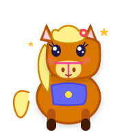
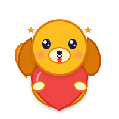

動物輔助治療如何幫助思覺失調個案找回生活動機與人際連結
🐾 點擊下方「下一頁」或按鍵盤右鍵開始 →
目錄
點擊任一章節快速跳轉
01. 臨床困境與破冰
被誤解的「隱形重擔」：負性症狀
四大核心症狀
- 動機缺乏：難以主動起床洗漱。
- 社交退縮：封閉心門遠離人群。
- 情感平淡：表情與語調變少。
- 無快感症：對喜好失去期待。
臨床與家庭瓶頸
- 藥物多平息幻覺妄想，對負性症狀改善有限。
- 常被誤認懶惰，催促反加重退縮。
🌟 生活轉譯：不是不努力，而是大腦啟動馬達暫時熄火。
🎮 01. 互動體驗站一
破冰迷思測驗：點擊卡片揭曉真相
迷思 1
整天躺著不動，多催促就會振作？
✅ 錯！不是偷懶
動機缺乏源自神經受損，責備只會推高焦慮，需低壓力正向啟動。
迷思 2
自己買隻寵物給家人養就有效？
✅ 錯！不等於專業治療
未經評估飼養反增負擔，專業動輔須由醫療與動輔團隊全程守護。
迷思 3
規則吃藥就能解決社交退縮？
✅ 錯！須雙軌並行
藥物穩症狀，仍須結合職能與動物輔助復健重建動機。
02. 認識動物輔助治療
什麼是動物輔助治療 (AAT)？
1. 專業黃金三角
- 目標復健，由動輔師、職能治療師與指導手協作。
2. 主流夥伴：犬與馬
- 犬（柯基、拉布拉多、馬爾濟斯、柴犬）：貼身破冰。
- 馬（哈芙林格馬）：地面照護與騎乘建自信。
3. 其他多元動物
- 文獻亦納入貓、農場動物（牛羊）與倉鼠，均經篩選。
🌟 生活轉譯：無條件接納的毛夥伴，讓復健更安心。
02. 核心機轉（一）
大腦「愛的荷爾蒙」：催產素凝視迴路

催產素 (Oxytocin) 的角色
- 由下視丘分泌，掌管社交依附與信任。
- 可抑制杏仁核過度警戒，降低人際恐懼。
溫柔凝視與撫摸共鳴
- 人犬眼神交流與輕撫能自然活化內源性催產素。
- 幫封閉已久的社交情感迴路重新通電。
🌟 生活轉譯：撫摸溫暖毛皮時，大腦悄悄打開「我可以信任對方」的安全開關。
02. 核心機轉（二）
大腦警報靜音鍵：皮質醇壓力調節
失靈的慢性壓力警報
- 個案常因 HPA 軸過度敏感，體內皮質醇長期偏高。
- 持續緊繃消耗心力，加重逃避退縮。
溫血陪伴啟動副交感
- 感受動物體溫與規律呼吸，促進心跳平穩。
- 血液與唾液皮質醇真實回落，解除身體警戒。
🌟 生活轉譯：溫熱陪伴像按下大腦防空警報靜音鍵，幫緊繃身心真正鬆口氣。
02. 核心實務模組
結構化四大活動模組：走向生活自理

1. 正向情緒
- 撫摸、梳毛，紓壓並練手部精細動作。
2. 認知活動
- 問答、下達「坐下」指令，建立掌控感。
3. 體能活動
- 牽繩散步、餵食，強化平衡與外出能力。
4. 社交活動
- 打招呼、介紹愛犬，重啟人際對話。
🌟 生活轉譯：梳毛對接穿衣，散步對接外出，復健融入日常。
🎮 02. 互動體驗站二
機制與生活功能配對：點擊卡片看解答
情境 1
安靜撫摸狗狗背毛 15 分鐘
🧬 對應機轉：催產素上升 ＋ 皮質醇下降
🏠 日常能力：焦慮降低，願意走出房間陪伴家人。
情境 2
握梳子幫狗狗梳毛與扣胸背帶
🧬 對應機轉：正向情緒與體能・精細協調
🏠 日常能力：對接穿衣扣鈕扣、拿筷子與梳洗自理。
情境 3
喊「坐下」，狗狗乖乖坐好
🧬 對應機轉：認知模組・自我效能感重建
🏠 日常能力：打破無助感，體會「我有能力做好」。
情境 4
牽繩散步並和病友聊狗狗喜好
🧬 對應機轉：外接動機 ＋ 社交活動泛化
🏠 日常能力：克服外出恐懼，回家主動與家人對話。
03. 全 6 篇臨床實證（一）
實證全景（一）：全球大型統合分析與系統性回顧
匯聚跨國數百位個案的長期追蹤，證實動物輔助治療絕非心理安慰劑
Peraile-Huerta et al. (2026)
全球最新統合分析｜Complementary Therapies in Medicine
- 統整全球 12 項臨床研究、涵蓋逾 400 位思覺失調譜系個案。
- 確立動物輔助治療對「負性症狀（缺乏動機、退縮冷漠）」具明確實質改善成效。
- 展現動物對於打破慢性退縮具有專一且穩健的臨床復健價值。
Tyssedal et al. (2023)
挪威卑爾根大學系統回顧｜Frontiers in Psychiatry
- 首篇專門鎖定成人思覺失調「犬類輔助介入」的嚴謹系統性回顧（納入 11 項研究、375 位個案）。
- 指出在結合專業團隊的結構化活動時，犬隻能大幅提升參與意願並催化人際互動。
- 強調治療關鍵在於透過動物引路，把個案帶入溫暖規律的社會互動。
Hawkins et al. (2019)
英國愛丁堡大學系統回顧｜Journal of Psychiatric Research
- 回顧早期 7 項隨機對照試驗（共 390 位個案），涵蓋犬、貓、馬、農場動物與倉鼠等多元物種。
- 奠定領域早期實證基線，並記錄到個案在自尊與自我效能感上的正向變化。
- 率先向國際學界呼籲建立嚴格的動物福祉與倫理審查標準。
🌟 生活轉譯：從 2019 年的謹慎奠基，到 2023 年的精細梳理，再到 2026 年跨國統合分析確立療效，實證醫學一步步為動物輔助治療寫下令人安心的背書。
03. 全 6 篇臨床實證（二）
實證全景（二）：三大臨床隨機對照試驗成果
走進台灣、土耳其與西班牙的臨床現場，見證客觀評估下的身心變化
Chen et al. (2021) 台灣團隊
高雄長庚與台大職能治療｜Frontiers in Psychiatry
- 招募 40 位平均 54 歲的中老年慢性個案，由 4 隻認證治療犬（柯基、拉布拉多、馬爾濟斯、柴犬）陪伴 12 週。
- 個案在情感表達、社交退縮、自發會話與自覺壓力皆呈現明顯改善。
- 全體 40 位個案皆完成 12 週課程、未有人中途退出，客觀顯示高度可行性與參與度。
Öztürk et al. (2025) 土耳其團隊
社區馬術治療試驗｜Journal of Psychosocial Nursing
- 招募 61 位社區心理衛生中心個案，與溫馴的哈芙林格馬進行 8 週地面照護與馬背騎乘。
- 個案深層的孤獨感大幅消融，焦慮減輕，整體生活品質與自尊感出現明顯提升。
- 跨上馬背的視野轉換與身體掌控經驗，協助個案重新建立自我效能。
Calvo et al. (2016) 西班牙團隊
巴塞隆納長週期試驗｜Frontiers in Psychology
- 針對 24 位長期住院的慢性思覺失調個案進行長達 6 個月的犬類輔助復健追蹤。
- 以客觀「唾液皮質醇化驗」證實與治療犬互動 1 小時後，體內壓力荷爾蒙真實下降。
- 介入組復健出席率高達九成以上（明顯高於常規對照組的六成），展現穩定參與動機。
🌟 生活轉譯：三項跨國隨機對照試驗一致呈現高出席率與客觀身心正向轉變，證明溫暖無壓力的復健環境能有效提升慢性個案的參與意願。
🎮 03. 互動體驗站三（PICO）
6 篇核心文獻 PICO 互動展廳
04. 雙向療癒倫理
雙向尊重倫理：動物福祉 (One Welfare)
守護治療動物原則
- 依國際指引控管工時，備妥飲水與休息區。
- 全程監測舔嘴、打哈欠等疲累訊號。
從照顧中萌芽同理
- 引導個案察覺動物疲累，主動讓牠休息。
- 在保護生命的同時，重建自我價值。
🌟 生活轉譯：療癒非單向索取；雙向尊重守護動物與個案。
05. 去污名化專題
給家屬的一封信：《從封閉孤立到溫柔破冰》
1. 理解取代指責
- 撕下懶惰標籤，看見大腦疾病本質，減少無效催促。
2. 肯定微小微光
- 伸手摸狗三分鐘或一次微笑，都是珍貴的復健進展。
3. 聊聊動物破冰
- 用毛孩趣事取代追問病情，讓客廳慢慢找回笑聲。
🌟 生活轉譯：「那天他回家主動說柯基腿短短的好可愛，我知道他正在慢慢走回來。」
結語：無聲的接納，點亮回家的路
「動物沒有語言，卻能聽懂最深沉的沉默；不帶評價的凝視，接住了跋涉中的心靈。」
期待醫療與社區動輔團隊攜手合作，讓溫暖陪伴成為常態復健選項。